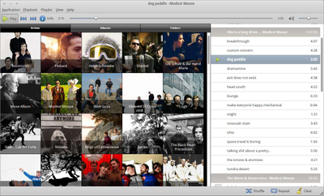
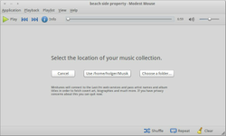
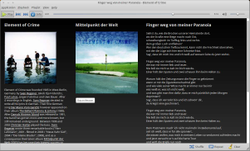

Musique
Dieser Artikel wurde für die folgenden Ubuntu-Versionen getestet:
Ubuntu 14.04 Trusty Tahr
Zum Verständnis dieses Artikels sind folgende Seiten hilfreich:
Musique  (früher Minitunes) stammt vom gleichen Autor wie Minitube. Es handelt sich dabei um einen auf das aller Notwendigste reduzierten AudioPlayer, der aber trotzdem einige pfiffige Funktionen beherrscht. Derzeit möglich sind:
(früher Minitunes) stammt vom gleichen Autor wie Minitube. Es handelt sich dabei um einen auf das aller Notwendigste reduzierten AudioPlayer, der aber trotzdem einige pfiffige Funktionen beherrscht. Derzeit möglich sind:
die Wiedergabe von Musikdateien, geordnet nach Künstler, Album oder Ordner
eine einfache Wiedergabeliste ("Playlist") mit Zufallsmodus und Wiederholungs-Funktion
eine "Info"-Seite, die Künstlerbiographie, Albuminformationen und den Liedtext des aktuell abgespielten Stücks anzeigt
das Übertragen der gespielten Titeldaten an last.fm
 ("Scrobbling")
("Scrobbling")

Gerade dieser Minimalismus ist die Stärke des Programms: Durch die recht flotte Benutzeroberfläche und die großen Bedienelemente eignet es sich besonders als:
schicker Zweit-Player
Audio-Player für Touchscreen-Oberflächen
Einsteigermodell eines reinen Musik-Abspielprogramms
Das Programm ist nicht als Ersatz für Musikverwaltungsprogramme wie Rhythmbox oder Banshee gedacht. Es verwendet die Bibliothek Qt4 für die grafische Oberfläche und das Multimedia-Framework GStreamer zum Abspielen.
Installation¶
Ab Ubuntu 12.04 ist Musique in den offiziellen Paketquellen enthalten und kann über das folgende Paket installiert [1] werden:
musique (universe)
 mit apturl
mit apturl
Paketliste zum Kopieren:
sudo apt-get install musique
sudo aptitude install musique
Fremdpaket¶
Der Programmautor Flavio Tordini bietet über die Projektseite ein aktuelles Fremdpaket an, das nach dem Herunterladen  noch manuell installiert werden muss [2].
noch manuell installiert werden muss [2].
Hinweis!
Fremdpakete können das System gefährden.
Bedienung¶

Einstellungen¶
Die Bedienung von Musique gestaltet sich weitgehend intuitiv. Beim ersten Start wird man nach dem Speicherort der Musikdateien gefragt, später kann dieser Pfad bei Bedarf über "Anwendung → Ändere den Musiksammlungsordner" geändert werden. Das war auch schon die einzige Einstellungsmöglichkeit.
Programmeinstellungen werden unter ~/.config/Flavio Tordini/ und ~/.local/share/data/Flavio Tordini/Musique/ abgelegt.
Browsen und Abspielen¶
Die drei Modi zum Browsen der Musiksammlung ("Künstler", "Alben", "Ordner") erklären sich von selbst. Die angezeigten Bildchen der Künstler und Alben werden dabei aus dem Internet (last.fm ) geladen. Fährt man nun mit der Maus über eines der angezeigten Bilder, hat man zwei Möglichkeiten: Entweder spielt man mit einem Klick auf den rechts oben erscheinenden Play-Button alle zu diesem Bild (z.B. einem Künstler) gehörenden Musikstücke aber. Oder aber man gelangt durch einen Doppelklick auf das Bild selbst eine Ebene tiefer, d.h. es werden z.B. nur die Alben dieses Künstlers angezeigt.

Abzuspielende Lieder werden immer an die Playlist angehängt, das ist etwas ungewöhnlich. Aber mit dem "Leeren"-Button unten rechts lässt sich die aktuelle Wiedergabeliste löschen.
Das wohl bemerkenswerteste Feature von Musique ist die Info-Ansicht. Hier wird in ansprechender Weise die last.fm-Biographie des Künstlers, das Albumcover, sowie der Liedtext des gerade laufenden Titels angezeigt.
Die nicht nur für Partys geeignete Vollbildansicht erreicht man über "Ansicht → Vollbild" oder die Taste F11 .
Problembehebung¶
Ubuntu 12.04¶
Die Version aus den Paketquellen von Ubuntu 12.04 wird mit einer unvollständigen Datei /usr/share/applications/musique.desktop ausgeliefert (960388). Dies führt unter anderen dazu, dass der "Öffnen mit..."-Mechanismus von Nautilus nicht funktioniert. Nachfolgend eine um Symbol und MIME-Typ korrigierte Fassung (Korrekturen sind hervorgehoben):
[Desktop Entry] Name=Musique GenericName=Music Player Comment=Play your music collection Exec=musique MimeType=audio/*; Terminal=false Type=Application Icon=musique.png StartupNotify=true
- Erstellt mit Inyoka
-
 2004 – 2017 ubuntuusers.de • Einige Rechte vorbehalten
2004 – 2017 ubuntuusers.de • Einige Rechte vorbehalten
Lizenz • Kontakt • Datenschutz • Impressum • Serverstatus -
Serverhousing gespendet von